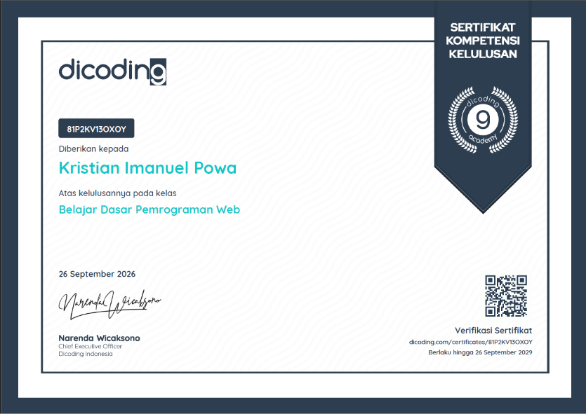
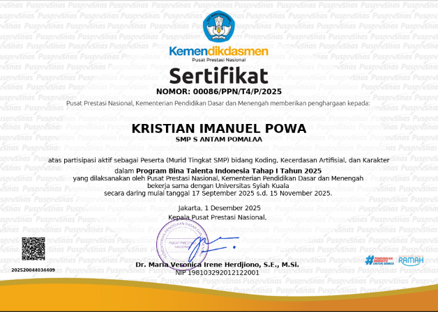

Tentang Saya
Saya adalah seorang siswa SMA yang memiliki ketertarikan besar di dunia teknologi, khususnya pengembangan web (web development). Saat ini, saya meningkatkan keahlian pemrograman web secara otodidak melalui platform freeCodeCamp, dan saya juga berencana mengikuti OSN Informatika. Website ini dibuat sebagai Proyek Akhir untuk memenuhi kriteria kelulusan kelas dasar web.
Keahlian & Hobi
Saya sangat menyukai dunia teknologi, eksplorasi game, serta aktif dalam kegiatan lari dan olahraga untuk menjaga kesehatan.
Pencapaian & Sertifikat

